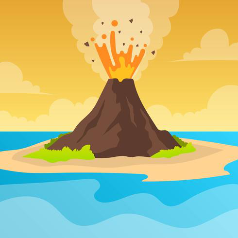

화산폭발

화산 폭발이란?
화산 폭발이란 지하 깊은 곳에서 생성된 마그마가 내부 압력이 커지면서 지표 밖으로 분출 되는 현상
1.화산재 낙하 전
1.문틈이나 환기구는
2.배수구가 막히는 것을 방지하기 위하여
❍ 급수용으로 빗물수집 시설 사용 시에는
❍ 만성기관지염이나 폐기종, 천식 환자는
❍ 가축의 사료나 물이
물 묻힌 수건
으로 막고, 창문은테이프
로 막음.2.배수구가 막히는 것을 방지하기 위하여
낙수받이나 배수관
을 지붕의 홈통으로부터 분리❍ 급수용으로 빗물수집 시설 사용 시에는
빗물수집 시설과 탱크에 연결된 파이프
를 분리❍ 만성기관지염이나 폐기종, 천식 환자는
실내
에 머무르도록 함.❍ 가축의 사료나 물이
오염되지 않도록
함.
2.화산재 낙하 중
1.
2. 불필요하게
3. 실외에 있을 경우,
4. 마스크나 손수건, 옷으로
5. 화산재 등에 대한
6. 콘택트렌즈 착용
공황 상태
에 빠지지 않고, 냉정하게2. 불필요하게
실외
에 있지 않도록 함.3. 실외에 있을 경우,
자동차나 건물
등으로 신속하게 대피4. 마스크나 손수건, 옷으로
코와 입 막기
5. 화산재 등에 대한
재난방송 청취
6. 콘택트렌즈 착용
금지
3.화산재 낙하 후
1. 주민들이 협력하여
2. 청소 시 건물이나 기계, 자동차, 상하수도시설에
3. 기계는 화산재를 전부 청소할 때까지
4. 지붕의 화산재는
최대한 신속히 청소
실시2. 청소 시 건물이나 기계, 자동차, 상하수도시설에
화산재가 들어가지 않도록
함.3. 기계는 화산재를 전부 청소할 때까지
전원을 꺼 두거나 밀봉
해 두도록 함.4. 지붕의 화산재는
적정한 시기
에 청소